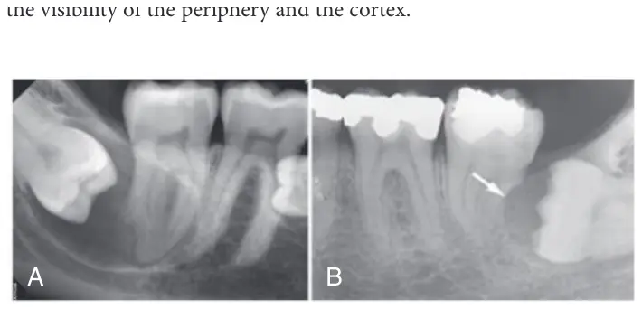
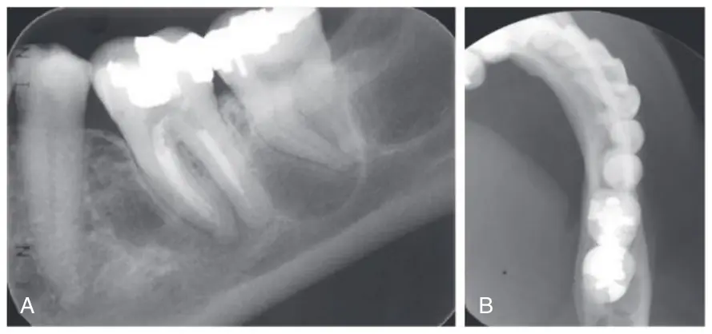

نسخه استخراجشده؛ ترجمه یا تأیید علمی انجام نشده است. وضعیت: captured
یک تعریف که همهی این یونیت روی آن سوار است: کیست واقعی «یک حفرهی پاتولوژیک با پوشش اپیتلیالی» است. اگر پوشش اپیتلیالی نباشد، دیگر کیست واقعی نیست.

و اپیتلیوم کیستهای فک از سه جای مشخص میآید — این سه را حفظ کن، چون نام هر کیست را همین منشأ تعیین میکند:
و کیستهای غیرادنتوژنیک؟ اپیتلیوم آنها یا اپیتلیوم تنفسی است یا سلولهای باقیمانده در خطوط جوشخوردگی زوائد جنینی. نمونهی شاخصش کیست مجرای نازوپالاتین است.
و گروه سوم: شبهکیستها (pseudocysts). اینها فاقد پوشش اپیتلیالی هستند و فقط چون شکلشان شبیه کیست است کنار کیستها بررسی میشوند. دو نمایندهشان — حفرهی سادهی استخوانی و فرورفتگی لینگوال مندیبل (نقص استافنه) — در درس آخر میآیند و هر دو در امتحان بارها با کیست واقعی اشتباه گرفته میشوند.
زنجیرهی رشد کیست را دنبال کن؛ هر حلقهاش یک ویژگی تصویری میسازد.

۱) اپیتلیوم تحریک میشود و تکثیر مییابد. ۲) استئوکلاستها فراخوانده میشوند و استخوان اطراف تحلیل میرود. ۳) سلولهای مرده و دبری در مرکز جمع میشوند و گرادیان اسمزی میسازند. ۴) مایع به درون کشیده میشود و فشار داخلی، کیست را یکنواخت در همهی جهات بزرگ میکند.
و نتیجهی مستقیم گام ۴ همان چیزی است که روی تصویر میبینی: شکل هیدرولیک — کانتوری صاف و منحنی، مثل سطح یک بادکنک. هرجا این کانتور را دیدی، به فرایندی با فشار داخلی یکنواخت فکر کن.
و چهار گام چارچوب تفسیر، این بار روی کیست:
و یک اشتباه رایج تصویری که باید همین حالا بشناسی: تکثیر نامساوی پوشش میتواند ظاهر مولتیلوکولار با سپتا بسازد؛ ولی اسکالوپ شدن حاشیه روی سطح اندوستئال هم روی تصویر تخت (پریاپیکال یا پانورامیک) سپتای کاذب میسازد. تصویر مقطعی این دو را از هم جدا میکند.